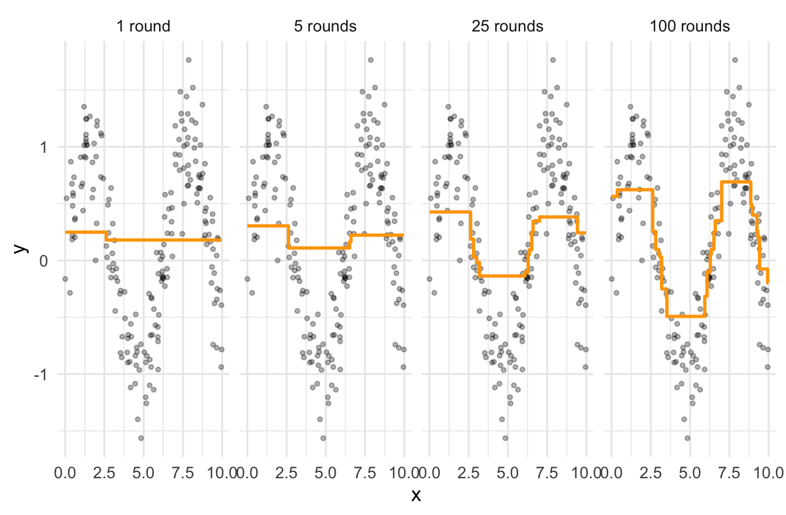
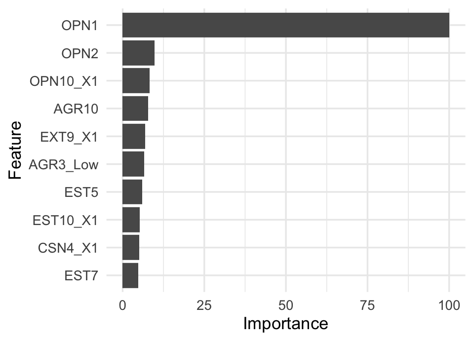
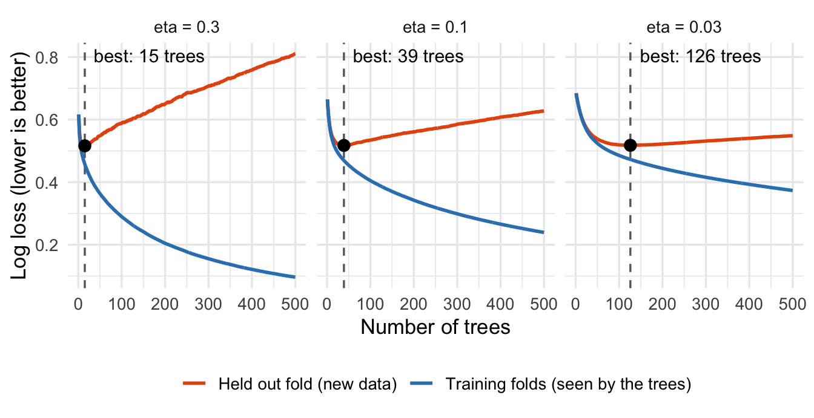
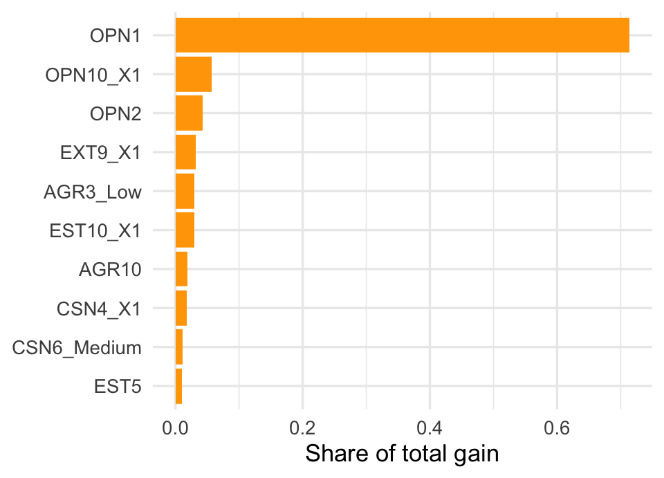

library(rpart)
library(ggplot2)
set.seed(559)
x <- runif(200, 0, 10)
y <- sin(x) + rnorm(200, sd = 0.3)
pred <- rep(mean(y), 200) # step 1: start with the mean
eta <- 0.1 # the learning rate
fits <- list()
for (m in 1:100) {
resid <- y - pred # step 2
stump <- rpart(resid ~ x, control = rpart.control( # step 3
maxdepth = 1, cp = 0, minsplit = 2, xval = 0))
pred <- pred + eta * predict(stump) # step 4
if (m %in% c(1, 5, 25, 100)) fits[[paste(m, ifelse(m == 1, "round", "rounds"))]] <- pred
}Gradient Boosting
Today’s Lecture
In today’s lecture we will cover:
- Where we have been: trees, bagging, and random forests
- Boosting: learning from mistakes
- A brief history, from a theory question to XGBoost
- Gradient boosting step by step
- Boosting in R with
caret - What makes XGBoost different, and XGBoost in R
Where We Have Been
A single decision tree is unstable: small changes in the data can produce a very different tree. So far we have fixed that by combining many trees.
- Bagging grows many deep trees on bootstrap samples and averages them.
- Random forests do the same, but each split considers only a random subset of predictors, which makes the trees less alike.
Both methods grow their trees independently, and both mainly reduce variance.
Bagging and Random Forests Revisited
Bagging
- Draw many bootstrap samples from the training data.
- Train a decision tree on each sample, usually grown fully with no pruning.
- Combine the trees: average for regression, majority vote for classification.
Random forests
- Draw many bootstrap samples from the training data.
- Train a decision tree on each sample. At each split, consider only a random subset of the predictors (
mtryin R). - Combine the trees the same way.
A Different Idea: Learn From Mistakes
Boosting builds its trees one after another. Each new tree focuses on what the trees before it got wrong.
- Each tree is small, often just a few splits.
- No single tree is a good model. Together, they add up to one.
| Method | Analogy |
|---|---|
| Bagging | Many students take a test on their own, and we average their answers. |
| Random forest | Many students take the test, each with a different subset of notes, which keeps their answers diverse. |
| Boosting | One student takes the test again and again, studying the questions they missed each time. |
Weak Learners
A weak learner is a model that is only a little better than guessing.
- A stump, a tree with one split, is the classic example.
- On its own, a stump is a poor model. It can only ask one question.
Can many weak learners, each only a little better than chance, be combined into one strong learner?
That question started the history of boosting.
A Brief History of Boosting
A theory question, 1988 to 1990
- Michael Kearns and Leslie Valiant asked whether weak learners could always be “boosted” into a strong learner.
- In 1990, Robert Schapire proved that the answer is yes, in “The Strength of Weak Learnability.”
AdaBoost, 1995 to 1997
- Yoav Freund and Robert Schapire turned the proof into a practical method, AdaBoost. After each round, it gives more weight to the cases the model got wrong, so the next weak learner focuses on them.
- Their work won the 2003 Gödel Prize, a top award in theoretical computer science.
- Leo Breiman, who invented bagging and random forests, called boosted trees the “best off-the-shelf classifier in the world.”
Boosting Becomes Statistics
At first, no one could fully explain why AdaBoost worked so well. Statisticians then showed that boosting is a familiar idea in disguise.
- In 2000, Jerome Friedman, Trevor Hastie, and Robert Tibshirani showed that AdaBoost fits an additive model by gradually reducing a loss function.
- In 2001, Friedman generalized this as the gradient boosting machine. Each new tree takes a small step downhill on any loss you choose: squared error for regression, log loss for classification.
- In 2002, Friedman added stochastic gradient boosting: fit each tree on a random subsample of the data. This borrowed an idea from bagging and made the models both faster and more accurate.
XGBoost
- In 2014, Tianqi Chen, then a graduate student at the University of Washington, released XGBoost, short for eXtreme Gradient Boosting.
- It became widely known through Kaggle’s Higgs Boson Machine Learning Challenge in 2014, where physicists asked machine learning teams to find signs of the Higgs boson in collider data.
- Chen and Carlos Guestrin described the method in a 2016 paper. They noted that 17 of the 29 winning solutions published on Kaggle’s blog in 2015 used XGBoost.
- Newer relatives followed, such as LightGBM from Microsoft in 2017 and CatBoost from Yandex. All of them are gradient boosted trees.
For prediction from tables of data, which is most of what psychologists collect, gradient boosted trees are still among the strongest methods available.
Gradient Boosting Step by Step
For a continuous outcome:
- Start with a simple prediction for everyone, such as the mean of \(y\).
- Compute the residuals: what the current model gets wrong.
- Fit a small tree to the residuals.
- Add that tree to the model, scaled down by a learning rate \(\eta\).
- Repeat many times.
After \(m\) rounds, the model is
\[ F_m(x) = F_{m-1}(x) + \eta \, h_m(x) \]
where \(h_m\) is the small tree fit to the residuals of \(F_{m-1}\).
Boosting in a Few Lines of R
Here is the whole algorithm, using stumps on a made up curve.
Watching Boosting Learn

- After 1 round, the model is the mean plus one small step.
- Each round adds a stump fit to what is still unexplained.
- By 100 rounds, a sum of 100 stumps has traced the curve, even though no single stump could.
Why “Gradient”?
For squared error loss, the residual is exactly the negative gradient of the loss with respect to the prediction:
\[ L = \tfrac{1}{2}\left(y - F(x)\right)^2 \qquad -\frac{\partial L}{\partial F(x)} = y - F(x) \]
- So fitting a tree to the residuals means taking a step downhill on the loss. This is gradient descent, but the steps are trees.
- For other losses, such as log loss for a yes or no outcome, the tree is fit to the negative gradient of that loss instead. These are called pseudo residuals.
- One algorithm then works for regression, classification, and more.
The Learning Rate
The learning rate \(\eta\), called shrinkage in gbm and eta in XGBoost, shrinks each tree’s contribution.
- A large \(\eta\) takes big steps. The model learns fast, but it can overshoot and overfit.
- A small \(\eta\) takes small steps. The model learns slowly, needs more trees, and usually predicts better in the end.
- Typical values run from 0.01 to 0.3.
The lasso also improves prediction by shrinking. What is being shrunk here?
Tree Depth
Boosting uses shallow trees, unlike bagging and random forests. The setting is interaction.depth in gbm and max_depth in XGBoost.
- Depth 1 (stumps): each tree uses one predictor, so the model adds up separate effects, with no interactions.
- Depth 2: each tree can combine two predictors, so the model can capture two way interactions.
- Depth \(d\): interactions among up to \(d\) predictors.
Values from 2 to 6 are common. Deeper trees fit more detail, and overfit sooner.
More Trees Can Overfit
With bagging and random forests, adding trees never hurts: averaging more trees only reduces variance.
Boosting is different. Each tree fits what is left over, so with enough trees the model starts fitting noise.
- Training error keeps falling as trees are added.
- Error on new data falls, levels off, then rises.
- Early stopping watches the cross validated error and stops adding trees once it has not improved for a set number of rounds.
Borrowing From Bagging: Subsampling
Stochastic gradient boosting adds randomness to each round.
- Fit each tree on a random share of the rows, such as half. This is
bag.fractioningbm, 0.5 by default, andsubsamplein XGBoost. - XGBoost can also give each tree a random share of the predictors,
colsample_bytree, as in random forests.
Both make the trees less alike and often improve prediction. They also make each round faster.
Three Ways to Combine Trees
| Bagging | Random forest | Boosting | |
|---|---|---|---|
| How trees are grown | Independently | Independently | One after another |
| Size of each tree | Deep | Deep | Shallow |
| Mainly reduces | Variance | Variance | Bias |
| Can more trees overfit? | No | No | Yes |
| Main settings | Number of trees | mtry |
Learning rate, depth, number of trees |
Why do boosted trees need to be shallow, when bagged trees work best deep?
Boosting in R With caret
caret fits gradient boosting with method = "gbm". The gbm package, first written by Greg Ridgeway, implements Friedman’s gradient boosting machine.
The steps are the same ones we used for trees, bagging, and random forests:
- A recipe for the predictors.
- A tuning grid, searched with cross validation in
train(). - One look at the test set.
The gbm Settings
caret tunes four settings for method = "gbm":
| Setting | What it controls | Typical values |
|---|---|---|
n.trees |
Number of trees | 100 to several thousand |
interaction.depth |
Depth of each tree | 1 to 6 |
shrinkage |
Learning rate | 0.01 to 0.3 |
n.minobsinnode |
Fewest observations allowed in a leaf | 5 to 20 |
For each depth and learning rate, caret grows the most trees once, then checks the cross validated error at every smaller number of trees along the way. A long list of n.trees values costs almost nothing extra.
Load the Required Packages
The Personality Data Again
The same data, split, and target as the last three lectures: predicting OPN8, “I use difficult words,” from the other 49 items.
data <- read.csv("data/data-final-shuffled.csv")
# items coded 0 and 1, and items stored as text, are categories
dichotomous_vars <- colnames(data)[sapply(data, max) == 1]
character_vars <- colnames(data)[sapply(data, class) == "character"]
cat_vars <- c(character_vars, dichotomous_vars)
data[cat_vars] <- lapply(data[cat_vars], as.factor)
target <- "OPN8"
set.seed(123)
split <- initial_split(data, prop = 0.7, strata = target)
data_train <- training(split)
data_test <- testing(split)The Recipe and the Grid
The same recipe as the random forest. The grid crosses four depths with two learning rates, and checks every 25 trees up to 1,000.
Fitting the Boosted Model
Each of the 8 depth and learning rate combinations is fit in each of the 10 folds. verbose = FALSE stops gbm from printing every round.
Tuning Results
- The left panel uses a learning rate of 0.03 and the right panel 0.1. Each line is a tree depth.
- With deeper trees, Kappa peaks early and then falls as trees are added. That is boosting overfitting.
- Cross validation chose 600 trees of depth 1, with a learning rate of 0.03.
Test Set Performance
Reference
Prediction 0 1
0 137 34
1 31 99 Accuracy Kappa Sensitivity Specificity
0.784 0.561 0.744 0.815 What Mattered Most
For gbm, varImp() reports relative influence, scaled so the top predictor scores 100.

| Predictor | Statement | Forest rank |
|---|---|---|
OPN1 |
I have a rich vocabulary. | 1 |
OPN2 |
I have difficulty understanding abstract ideas. | 2 |
OPN10_X1 |
I am full of ideas. | 3 |
AGR10 |
I make people feel at ease. | 9 |
EXT9_X1 |
I don’t mind being the center of attention. | > 10 |
- Compared with the random forest,
AGR10andEXT9_X1are new to the top five, replacingCSN5andOPN7. - Importance shows how much a predictor helps, not in which direction.
What Makes XGBoost Different
XGBoost is gradient boosting with several additions.
- A penalty on tree complexity. It minimizes the loss plus a penalty on each tree \(f\): \[ \Omega(f) = \gamma T + \tfrac{1}{2} \lambda \sum_{j=1}^{T} w_j^2 \] where \(T\) is the number of leaves and \(w_j\) are the leaf values. This is regularization, applied to trees.
- Smarter steps. It uses both the slope and the curvature of the loss to choose each tree, like Newton’s method.
- Built in handling of missing values. At each split it learns which branch missing values should follow, so imputation is optional.
- Speed. It searches for splits in parallel and bins numeric predictors, so it runs fast on large data.
XGBoost’s Main Settings
| Setting | What it controls | Typical values |
|---|---|---|
nrounds |
Number of trees | Chosen by early stopping |
eta |
Learning rate | 0.01 to 0.3 |
max_depth |
Depth of each tree | 2 to 6 |
min_child_weight |
Smallest allowed leaf, measured by weight | 1 to 10 |
gamma |
Smallest loss reduction needed to split | 0 to 5 |
subsample |
Share of rows per tree | 0.5 to 1 |
colsample_bytree |
Share of predictors per tree | 0.5 to 1 |
lambda |
Penalty on leaf values | 1 by default |
A Tuning Strategy
There are too many settings to search all at once, so tune in stages.
- Fix a moderate learning rate, such as 0.1, and use early stopping to choose the number of trees.
- Tune the tree size:
max_depthandmin_child_weight. - Tune the randomness:
subsampleandcolsample_bytree. - Lower the learning rate and let early stopping add trees to match.
At every stage, choose using cross validation on the training data only.
XGBoost in R
caret’s XGBoost method, method = "xgbTree", no longer works with the current version of the xgboost package, so here we call xgboost directly. The steps are the same ones we just used with gbm:
- Turn the predictors into a numeric matrix.
- Choose the settings with cross validation on the training data.
- Fit the final model.
- Evaluate it once on the test set.
Load xgboost
The data, split, and recipe are the ones we used for gbm. We only need one more package.
XGBoost Needs a Numeric Matrix
xgboost does not take a formula or a data frame. We prep the same recipe we gave gbm, and bake() returns a matrix.
prepped <- prep(blueprint)
x_train <- bake(prepped, new_data = NULL, all_predictors(), composition = "matrix")
x_test <- bake(prepped, new_data = data_test, all_predictors(), composition = "matrix")
# the outcome must be coded 0 and 1
y_train <- as.integer(data_train$OPN8 == "1")
y_test <- as.integer(data_test$OPN8 == "1")
dtrain <- xgb.DMatrix(x_train, label = y_train)
dtest <- xgb.DMatrix(x_test, label = y_test)Folds and Settings
Fixing the folds with createFolds() makes the results reproducible, and lets every model below use the same folds.
set.seed(559)
folds <- createFolds(data_train$OPN8, k = 10)
params <- list(
objective = "binary:logistic", # a yes or no outcome
eval_metric = "logloss", # score each round by log loss
eta = 0.1, # learning rate
max_depth = 2, # tree depth
tree_method = "hist" # the fast default in current versions
)Cross Validation With Early Stopping
xgb.cv() grows trees one round at a time and tracks the cross validated log loss.
[1] 39Cross validated log loss is lowest after 39 trees, so training stopped 50 rounds later.
Watching It Overfit
What if we never stopped? Here we grow 500 trees at three learning rates, with no early stopping.

- Log loss measures how far the predicted probabilities are from what happened.
- On the training folds, more trees always help. On the held out fold, they help only up to the dashed line. After that, new trees fit noise.
- Early stopping stops near the dashed line. A larger learning rate gets there sooner, and overfits faster.
Tuning Depth and Learning Rate
A small grid, with early stopping choosing the number of trees for each combination.
grid <- expand.grid(eta = c(0.03, 0.1, 0.3), max_depth = c(1, 2, 3, 4))
grid$rounds <- NA
grid$logloss <- NA
for (i in seq_len(nrow(grid))) {
p <- modifyList(params, list(eta = grid$eta[i], max_depth = grid$max_depth[i]))
fit <- xgb.cv(params = p, data = dtrain, nrounds = 2000, folds = folds,
early_stopping_rounds = 50, verbose = 0)
grid$rounds[i] <- which.min(fit$evaluation_log$test_logloss_mean)
grid$logloss[i] <- min(fit$evaluation_log$test_logloss_mean)
}XGBoost Tuning Results
The five best combinations, by cross validated log loss:
eta max_depth rounds logloss
3 0.30 1 39 0.5127392
2 0.10 1 102 0.5136745
1 0.03 1 387 0.5138147
6 0.30 2 15 0.5161479
5 0.10 2 39 0.5174527The best trees have depth 1. Stumps cannot capture interactions, so for these data an additive model, one separate effect per item, predicts best.
The Final Model
We fit the best combination on all of the training data, with the number of trees early stopping chose.
The best model uses a learning rate of 0.3, trees of depth 1, and 39 trees.
XGBoost Test Set Performance
predict() returns probabilities. We call a respondent a 1 when the probability is above 0.5.
Reference
Prediction 0 1
0 139 31
1 29 102 Accuracy Kappa Sensitivity Specificity
0.801 0.595 0.767 0.827 Comparing Our Models
The same 301 test respondents, across four lectures:
| Test set | Single tree | Bagged trees | Random forest | gbm | XGBoost |
|---|---|---|---|---|---|
| Accuracy | 0.741 | 0.774 | 0.781 | 0.784 | 0.801 |
| Kappa | 0.469 | 0.543 | 0.555 | 0.561 | 0.595 |
| Sensitivity | 0.654 | 0.752 | 0.752 | 0.744 | 0.767 |
| Specificity | 0.810 | 0.792 | 0.804 | 0.815 | 0.827 |
- Each step improved prediction: one tree, then many trees averaged, then trees made less alike, then many small trees learning from each other’s mistakes.
- Both boosted models got there with small trees, combined carefully.
What Mattered Most to XGBoost
xgb.importance() ranks predictors by gain: how much the splits on each predictor improved the model, summed over all trees.

| Predictor | Statement | Forest rank |
|---|---|---|
OPN1 |
I have a rich vocabulary. | 1 |
OPN10_X1 |
I am full of ideas. | 3 |
OPN2 |
I have difficulty understanding abstract ideas. | 2 |
EXT9_X1 |
I don’t mind being the center of attention. | > 10 |
AGR3_Low |
I insult people. | > 10 |
- Compared with the random forest,
EXT9_X1andAGR3_Loware new to the top five, replacingCSN5andOPN7. OPN1leads in every model so far.
Wrapping Up
- Boosting grows small trees one after another, each fit to what the model still gets wrong. It mainly reduces bias.
- Gradient boosting treats this as gradient descent on a loss, so one algorithm handles regression and classification.
- The learning rate, tree depth, and number of trees work together. Early stopping with cross validation picks the number of trees.
- In R,
caretfits boosting withmethod = "gbm", using the same workflow as every other model this semester. - XGBoost adds regularization, built in handling of missing values, and speed.
These models predict well, but no one can read hundreds of trees. Next: how do we explain what a model like this has learned?